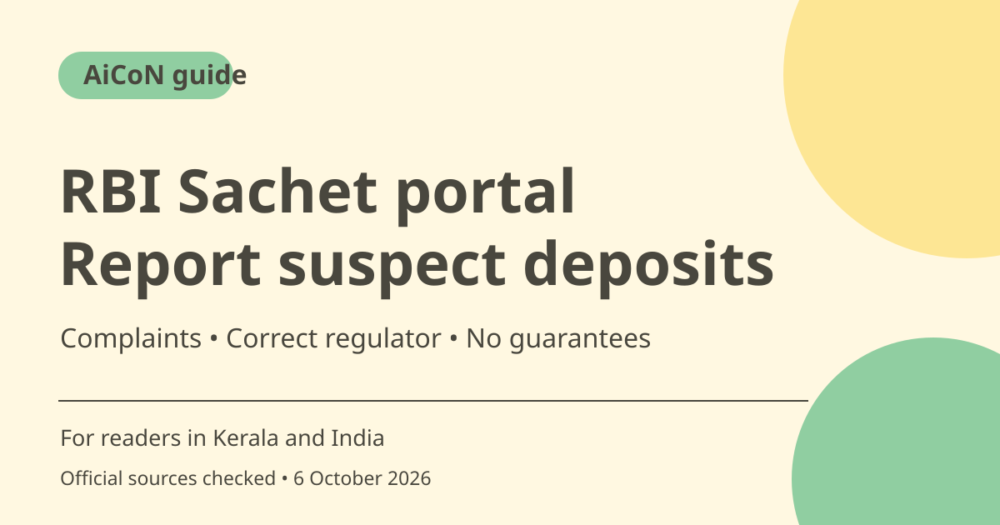

RBI Sachet: report illegal deposits and suspect schemes
Sachet helps route complaints and information about unauthorised deposit collection and suspect money schemes to the appropriate regulator or law-enforcement authority. It is not the route for ordinary bank-service complaints, and it does not guarantee recovery or closure.

What is Sachet?
Sachet is an official portal for information and complaints involving deposits and schemes. Its FAQ describes companies that collect money illegally or default on repayment of money collected under a scheme. A complaint submitted there is forwarded to the relevant authority, which acts under its own procedures.
Who can use it in Kerala and India?
A person who paid into a suspect deposit or investment scheme can review the complaint route. Someone who notices unauthorised deposit-taking can use Help your Regulator to provide information, with supporting documents or pictures. Keep suspected activity distinct from a proven legal conclusion; report the facts and evidence rather than making claims you cannot support.
What topics are listed?
The complaint form includes categories such as fake websites, fictitious calls, phishing emails, fraudulent employment schemes, Ponzi or MLM collections, unauthorised deposits and non-repayment. The presence of a category does not mean every incident should be sent only to Sachet. For an immediate financial cyber fraud, also use the appropriate prompt bank and cybercrime reporting routes.
Bank-service complaints go elsewhere
The Sachet complaint page directs service deficiencies involving RBI-regulated entities such as banks, NBFCs and payment providers to the RBI Complaint Management System. Do not use Sachet merely because a problem involves money. Choose the route that matches illegal deposit collection versus a complaint about a regulated provider's service.
If you do not know the regulator
The FAQ says the administrator can try to direct a complaint to the appropriate regulator when the complainant cannot identify it. If you know the regulator, use that information to route the matter clearly. Include the entity name, scheme, payment history and contact details relevant to the complaint, without publishing sensitive material in a public group.
Follow-up and recovery limits
The FAQ says there is no definite resolution time because legal procedures and other factors matter. It describes acknowledgement and forwarded-authority contact details, and a Track your complaint function. Sachet explicitly does not ensure final action or closure. Do not pay someone promising guaranteed recovery because you filed a complaint.
How to use it, step by step
- Open sachet.rbi.org.in directly and read the FAQ to confirm that the issue involves deposits or a suspect scheme.
- Gather the entity name, scheme details, dates, amounts, payment references and relevant communications. Keep originals and redact unrelated private material.
- Choose File a Complaint if money was illegally collected or not repaid under a scheme. For information about suspect activity, consider Help your Regulator.
- If you know the regulator, follow the appropriate route shown. If not, use the portal's assistance rather than inventing a regulator.
- Choose a category that matches the facts and complete the current required fields. Review the statement and attachments before submitting.
- Keep the acknowledgement and complaint reference. Use Track your complaint or forwarded-authority contact information for updates.
- For a bank-service deficiency, use the RBI CMS route indicated by Sachet. For an urgent fraud transfer, report promptly to the bank and official cybercrime channels too.
Cost, eligibility and limits
| Official route | No private paid agent is needed to use the official complaint instructions. |
|---|---|
| Scope | Deposits and suspect schemes, not the general route for bank/NBFC service deficiencies. |
| Outcome | No guaranteed refund, closure or definite resolution time. Authorities handle complaints under their own procedures. |
| Information route | Help your Regulator can accept supporting documents or pictures about suspected unauthorised deposit activity. |
Frequently asked questions
Can Sachet guarantee my money returns?
No. The portal does not ensure final action or closure, and the FAQ gives no definite resolution time.
Should I use it for a normal bank-service complaint?
Sachet directs those complaints involving RBI-regulated entities to the CMS route.
Can I report a suspect scheme without having paid?
The FAQ describes Help your Regulator for information on suspected unauthorised deposit collection.
Official sources
Checked 6 October 2026. Features and prices can change. This is a guide, not a personal product test.